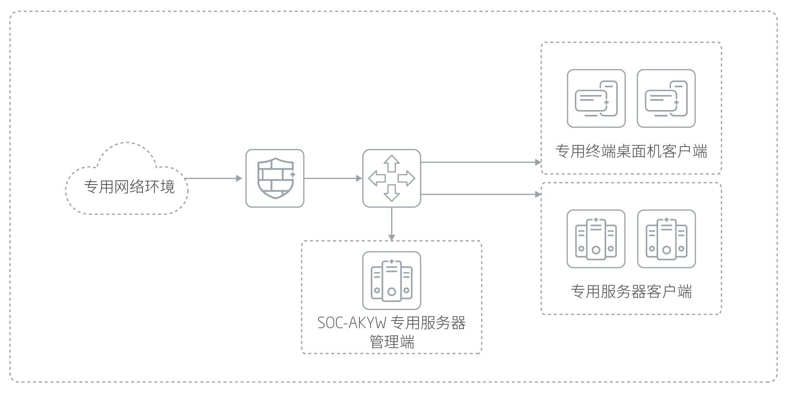

产品概述
赛博特安专用运维管理系统（SOC-AKYW）为专用软硬件生态而针对性设计，能够准确跟踪专用服务器、网络设备、安全设备、数据库、中间件、专用终端桌面机的运行状态和性能状态，实时采集安全事件，提供归一化处理和关联分析，自动进行告警，执行预定义响应动作等。是建设运维流程体系、提高运维监控能力的重要技术手段，保障专用业务系统的稳定运行。
应用价值
满足相关政策要求，针对信创平台建立安全性、专业化、规范化的运维管理体系。实现专用设备故障告警功能，及时提醒网络管理员故障发生点，提高网管人员的工作效率实现专用设备一体化展示、监控等。
产品亮点
服务器与终端高适配性
实现对专用服务器的统一监控和管理，提前预知服务器性能瓶颈，及时解决，避免故障发生。产品支持如下专用计算平台：中标麒麟操作系统+龙芯处理器、中科方德操作系统+海光处理器、银河麒麟操作系统+飞腾处理器、中科方德操作系统+兆芯处理器、中标麒麟操作系统+申威处理器、中标麒麟操作系统+海光处理器。桌面机支持：中标兆芯，中标龙芯，方德兆芯，银河飞腾。
网络资产运行实时监控
网络资产管理可实现拓扑可视化大屏展示，当监控对象出现故障告警时，可通过颜色变化等方式通知系统维护人员。
多维视图监控稳定可靠
提供视图定制功能，支持从不同角度不同层次提供多种表现形式的网络拓扑显示：网络逻辑视图、物理连接视图和子网拓扑视图等。根据所添加网络资产，用户可多维度选择监控指标，并且按照优先级进行告警触发。系统自身管理是指对整个系统自身进行管理，其中包括对系统状态进行监测，系统登录和操作日志管理，系统能够根据需要进行系统数据备份和恢复。
及时告警数据集中规范处理
提供统一告警监视界面，提供实时和历史告警信息的查看；可按照业务、设备统计异常告警事件的分布；对不同严重级别的告警，以不同的颜色进行显示；可选中某告警查看相关的维护经验；支持按照告警类型、级别、告警源、告警时间等不同属性进行告警查询或组合查询统计。
报表丰富加密导出安全可靠
支持资产的运行状态、关键性能、告警、资源等各种统计报表，方便用户直观、多角度了解当前整个网络资源的运行全局。系统遵从保密原则，对所有可导出的数据进行加密处理，切实保证专用业务系统的数据安全。
应用场景
信创环境下，批量运行在专用服务器、专用设备、专用业务系统等信息节点中。SOC-AKYW分为管理端和客户端，系统管理端接收客户端数据，进行数据处理，并在Web页面进行展现。

产品规格
| 产品形态 | 软件 |
| 适配硬件平台 | 龙芯处理器 飞腾处理器 兆芯处理器 海光处理器 |
| 适配服务器操作系统 | 中标麒麟 银河麒麟 中科方德 |
| 适配桌面机平台 | 中标麒麟+龙芯3000 中标麒麟+龙芯4000 银河麒麟+飞腾2000 银河麒麟+飞腾1500 中科方德+兆芯 中科方德+海光 |
| 适配浏览器 | 奇安信安全浏览器 |